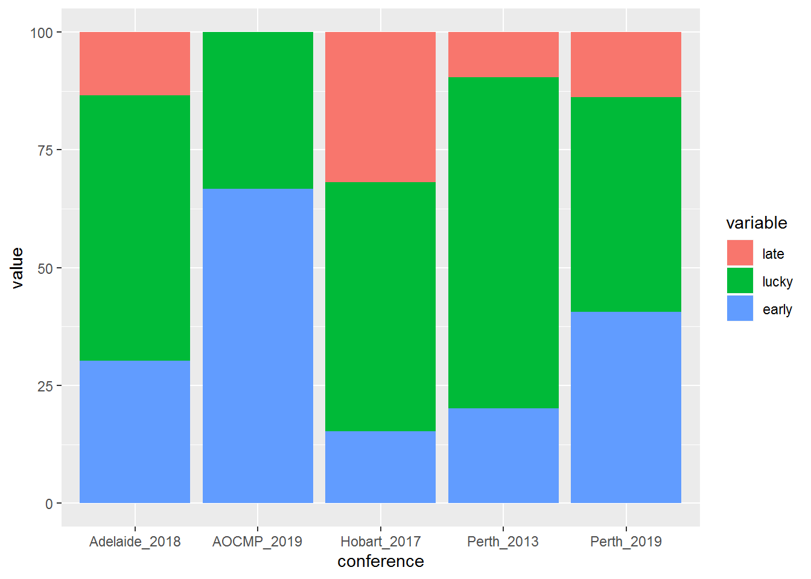

EPSM authors are as optimisitc as in 2013.
AOCMP authors are more punctual.
An analysis of EPSM and AOCMP abstact submissions
Robert Day1 Tegan Rourke2 Harriet Cottam3
1 Health Technology Management Unit, EMHS
2 Medical Technology & Physics, Sir Charles Gairdner Hospital
3 The Conference Company
The prologue…
When EPSM came to Perth in 2013 it looked like making a huge loss.
To save money, branch members did most of the work of handling submissions, scheduling and making the abstract book. Just like the old days. This gave us direct access to the submission data, so we Scienced it. What we saw was that people:
- left their submission to the very last minute
- definitely expected a deadline extension
- still left their submission to the very last minute
Has anyone learned anything since then?
shiny, happy data
This year’s Conference The initial raw data contained information that could be used to identify individual papers or submitters. To protect everyone’s secret identities, these data were scrubbed clean. In the process, they were rearranged into a single standard format for comparison between meetings. The technical term for this is munging.
Only sparkling clean pre-munged data are included in this project for your convenience.
Results
Figure 1: Time allowed for submissions by conference
EPSM conferences vary in the length of time they allow for submitting abstracts,
although they all call for papers about 240 days before the conference.
Perth 2013 opened earlier and for longer,
with an extension period twice that of other conferences.
This was done to maximise the number of income generating units attendees.
| conference | early | lucky | late | total |
|---|---|---|---|---|
| AOCMP_2019 | 78 | 39 | 0 | 117 |
| Perth_2019 | 88 | 99 | 30 | 217 |
| Adelaide_2018 | 70 | 130 | 31 | 231 |
| Hobart_2017 | 26 | 90 | 54 | 170 |
| Perth_2013 | 0 | 0 | 219 | 219 |
Perth 2019 is a monster with the assistance of AOCMP, weighing in at 334 papers in total.
Hobart in 2017 looks a bit light on, but this may be due to some late submissions being missed1.
AOCMP authors appear to be good at keeping to deadlines, with 2/3 of submissions in before the advertised close, and no late submissions. 
By contrast EPSM authors like to live dangerously, with 38.7% of submissions in the extension period on average.
what themes abounded?
Only the Perth meetings have submission details, which were grouped by broad themes for comparison.

The share of abstracts in each discipline seems fairly stable over time, although EPSM 2013 had more ROMP and Engineering related content and less Nuclear Medcine or Health Physics. The high number in Engineering may have been because Engineers on the conference committee actively extorted submissions.
## topic AOCMP 2019 EPSM 2013 EPSM 2019
## 1: Eng 5.13 7.76 3.69
## 2: Health Phys 1.71 0.46 1.38
## 3: Nuc Med 4.27 3.65 5.07
## 4: ROMP 56.41 67.12 64.98
## 5: Radiology 3.42 7.76 7.83
## 6: other 29.06 13.24 17.05AOCMP members seem less interested in Radiology Physics, with a lot more ‘other’ abstracts. This may be partly an artefact of the wide range of themes in 2019.
No-one seems to love Health Physics, which is sad.
embrace & extend
This poster was made in an attempt to sell the idea of Reproduceable Research.
The complete package, including the cleaned data, code and the poster template will be at (https://github.com/yadbor/EPSM-analysis), or just scan the QR code on this poster.
References
Colophon
Made with the posterdown_betterport template for the {posterdown} package, available from CRAN (https://cran.r-project.org/) or github (https://github.com/brentthorne/posterdown).
Written in R (https://www.r-project.org) and Rmarkdown (https://rmarkdown.rstudio.com), using RStudio 1.1.463 (https://rstudio.com)
Rourke, T. 2019 Personal communication.↩